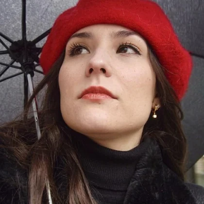

Cresci agarrada a cinema e televisão, comecei a montar aos doze anos e nunca mais parei bem. Primeiro foi um passatempo, depois um negócio meu, e agora é o trabalho todo. Sou também psicóloga e trabalhei como tal antes disto, e depois segui aquilo de que gostava mais.
Social media content, YouTube videos and corporate work, for household-name consumer brands, international organizations and global tech companies, sometimes direct and sometimes through their agencies. Footage arrives, and everything after that is mine: the cut, the color, the sound, the subtitles, and the part where I watch it forty times and still find something to move.
Uma pessoa, sem equipa, sem gestores de conta. Fala diretamente com quem está a montar o seu vídeo. Continuo a montar coisas que ninguém pediu ao fim de semana, e é por isso que tenho os discos cheios de trabalho que nenhum cliente vai ver.